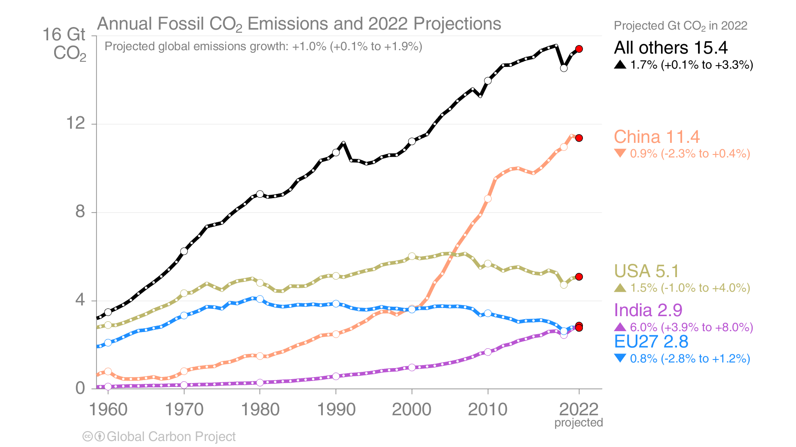
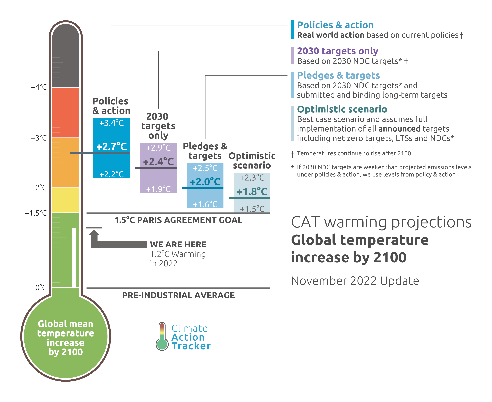

In Autumn 2018 two events caused me to pay attention to Climate Change: (1) Extinction Rebellion held their first mass protest in London, (2) the IPCC released SR15: Special Report: Global Warming of 1.5ºC.
In April/May 2019 I spent ~80 hours diving really deeply into the general topic of climate change and turned what I'd learned into a talk aimed at a general audience that would explain why climate change matters and what we need to do to address it:
In December 2020 I spent another ~35 hours writing another talk which summarized the global climate action progress since my first talk:
“IPCC Working Group 1 Report is a code red for humanity. The alarm bells are deafening, and the evidence is irrefutable: greenhouse gas emissions from fossil fuel burning and deforestation are choking our planet and putting billions of people at immediate risk. Global heating is affecting every region on Earth, with many of the changes becoming irreversible.” - UN Secretary-General António Guterres (2021) (source)
“This is the decade in which, contrary to everything humanity has experienced before, we have everything in our power. We have the capital, the technology, the policies. And we have the scientific knowledge to understand that we have to half our emissions by 2030. So we are facing the most consequential fork in the road. If we continue as now, we are going to be irreparably going down a course of constant destruction, with much human pain and biodiversity loss. Or we can choose to go in the other direction, a path of reconstruction and regeneration, and at least diminish the negative impacts of climate change to something that is manageable. But we can only choose it this decade. Our parents did not have this choice, because they didn't have the capital, technologies and understanding. And for our children, it will be too late. So this is the decade and we are the generation.” - Christiana Figueres (2020) (source)
Extinction Rebellion have published a summary of the climate change situation titled Emergency on Planet Earth
IPCC SR15 projected that in pathways with no or limited overshoot of 1.5°C, global net CO2 emissions need to decline by about 45% from 2010 levels by 2030. For limiting global warming to below 2°C CO2 emissions are projected to decline by about 25% by 2030 in most pathways (source). However, global emissions have not even started declining yet. The UN Emissions Gap Report tracks this gap between projected emissions and the required emissions reductions to meet the Paris Agreement goals.
 (source)
Current global policies are predicted to result in a +2.7C world, and even the most optimistic scenario where all announced targets are met would result in between +1.5C and +2.3C of warming:
 (source)
One of the reasons for some optimism is that the Climate Action Tracker projected temperatures have been declining as climate action has progressed:
Working on Climate:
Climate Progress
This is a collection of some of the snippets I come across on the web which make me feel a little bit more hopeful about the energy transition progress.
Green steel is here: Swedish steelmaker SSAB is converting its entire Nordic steel production system to fossil free by 2030, invests $572.9m in green transformation of its Oxelösund mill
— Assaad Razzouk (@AssaadRazzouk) June 3, 2023
Big Oil and their enablers keep saying it can’t be donehttps://t.co/jzkEJrd1oF #climate pic.twitter.com/8Iz1RoYUPQ
China 🇨🇳 has gotten the message on the importance of decarbonizing
— Science Is Strategic (@scienceisstrat1) June 2, 2023
➡️ China added more renewables last year than US, Europe & India combined
➡️ Chinese EV sales went from 3.5% of new car sales to 26% in just 2 years
It will take time to bend their curve but it will happen 📉 https://t.co/WM8tkxivAq pic.twitter.com/MdSR6HeaTB
India's national electricity plan was just released and says the country will not consider any new coal plants for the next 5 years
— Justin Guay (@Guay_JG) June 2, 2023
Instead it's betting its future on renewable energy
Here comes the sun 😎https://t.co/reU2EMPRSz
Wow – the world will add a record 440GW of new renewable capacity this year, says @IEA update
— Simon Evans (@DrSimEvans) June 1, 2023
That's 24% more than it said just six months ago – and double what it expected in 2020
It also includes an "accelerated case" where growth reaches 500GW this year 🤯 pic.twitter.com/0r9LaBFV9M
Good morning with good news: China's CO2 emissions are likely peaking this year, with long-term decline starting in 2024. That's seven years ahead of China's 2030 target to reach peak emissions! Peak Chinese CO2 is vital for climate action. Now Downward!https://t.co/pcAu7HRKGh pic.twitter.com/ZihSqZ1REh
— John Raymond Hanger (@johnrhanger) May 30, 2023
🚨🆕Presentation: the latest in decarbonization.
— Nat Bullard (@NatBullard) May 4, 2023
Everything from primary supply growth rates, to Sierra Nevada snowpack, to US manufacturing investment, to shale (and Tesla) free cash flow.
Some is familiar, much is new, all is important (I think!). https://t.co/jzmrWO8tPV pic.twitter.com/C6PZHUXbvc
Look at this: only six years ago, 1 in 100 cars bought in the UK was electric. Now it's 1 in 3. The power of exponential growth https://t.co/ge3TOd4lbO @newautomotive1 @CarbonBubble pic.twitter.com/M5CT36yneE
— Richard Black (@_richardblack) January 6, 2023
Incredible milestone - green finance surpassed fossil fuel financing in 2022 ($580bn vs $530bn)
— Science Is Strategic (@scienceisstrat1) January 4, 2023
Cc: @Noahpinion @ramez @JesseJenkins @dwallacewells pic.twitter.com/bnFUSiOOul
EU solar additions +47% yoy.
— Lion Hirth (@LionHirth) January 3, 2023
A big shout-out to everyone on the industry who made this possible, from big utility investors to electricians.
The 2010-12 PV boom was driven by tax money spend for expensive panels in two countries (DE & IT), and hence collapsed. pic.twitter.com/7mKACJAsNu